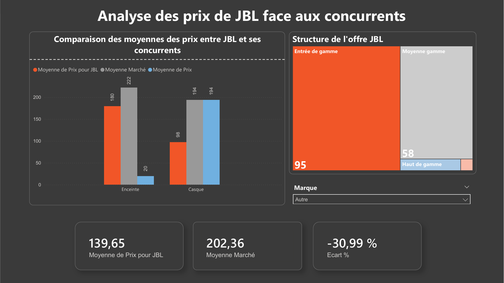
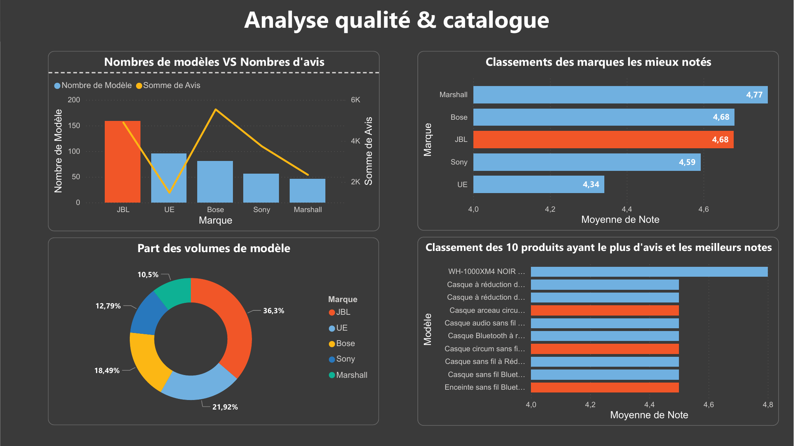
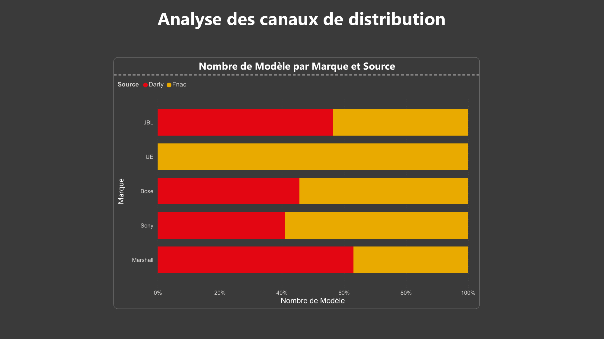

Analyse concurrentielle JBL sur la Fnac & Darty

Le problème
Comment la marque JBL se positionne-t-elle réellement face à ses concurrents (Bose, Sony, Marshall, UE) sur les deux plus grands distributeurs français d'électronique grand public, la Fnac et Darty ? L'enjeu : passer d'une intuition marketing à une lecture chiffrée du marché de l'audio nomade (enceintes & casques).
Ma démarche
- Web scraping des catalogues de la Fnac et Darty sur 5 marques (prix, gamme, notes, nombre d'avis, canal de distribution).
- Nettoyage et consolidation des données dans Excel.
- Modélisation et création de KPIs comparatifs (prix moyen, écart au marché, structure de gamme, note moyenne).
- Restitution dans trois dashboards Power BI : analyse prix, qualité & catalogue, et canaux de distribution.
Les résultats clés
Dashboard 1 — Analyse des prix
JBL affiche un prix moyen de 139,65 € contre 202,36 € pour le marché, soit un écart de −30,99 %. L'écart est extrême sur les casques (98 € contre 194 €). La structure de l'offre est massivement orientée entrée de gamme (95 modèles) et moyenne gamme (58), avec une présence marginale sur le haut de gamme.
Dashboard 2 — Qualité & catalogue

Avec 36,3 % des modèles, JBL domine le marché en volume de catalogue. Sa note moyenne (4,68/5) le place au niveau de Bose et juste derrière Marshall (4,77). Le croisement « nombre de modèles vs nombre d'avis » montre toutefois que ce très large catalogue ne se traduit pas par un volume d'avis proportionnel : la profondeur de gamme ne génère pas l'engagement client attendu.
Dashboard 3 — Canaux de distribution

JBL est bien réparti entre les deux enseignes (présent à la fois sur Darty et la Fnac), là où certains concurrents comme UE dépendent quasi exclusivement d'un seul canal — un atout de couverture pour JBL.
Ma recommandation
JBL combine le plus gros catalogue du marché, une excellente note client (4,68/5) et des prix inférieurs d'environ un tiers à la concurrence. Cette sous-valorisation est une opportunité : la marque dispose d'une réelle marge de manœuvre pour repositionner une partie de son offre vers une moyenne gamme légèrement plus chère. Elle gagnerait en rentabilité tout en restant compétitive, sans avoir à se lancer sur un haut de gamme qui n'est pas dans son ADN.